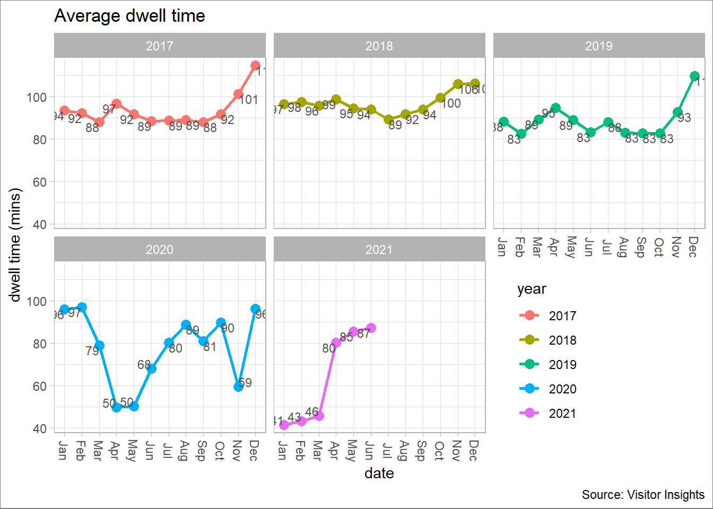
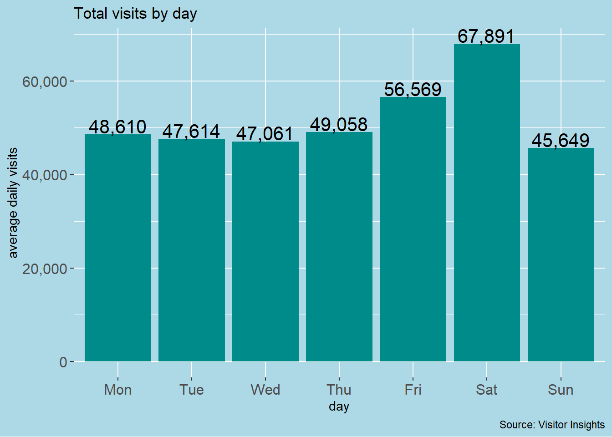

2 Time Intelligence
To examine how data vary in time, It is important to explore its general characteristics. The first step prior to any command is to load the data to the space environement and to install some required packages. An R package is a collection of functions, data and documentations. To install an R package, you might use a single line of code:
install.packages ("package")
You must type that line of code in the console and then press ENTER to run it. R will download the packages from a collection of short programming repository known as CRAN (Comprehensive R Archive Network) and install them onto your computer.
Once the package is installed, you can load it with library() function.
CRAN also provides access to documentation on R, existing mailing lists and the R Bug Tracking system. The basic information about a package is provided in the description file, where you can find out what the package does, who the author is, what version the documentation belongs to, the date, the type of license its use, and the package dependencies. You can also access the description file inside R with the command packageDescription("package"), via the documentation of the package help(package = "package"), or online in the repository of the package.
# install if necessary using 'install.packages'
library(tidyverse)
library(lubridate)
library(ggplot2)
library(plotly)
library(dplyr)
library(scales)
library(pipeR)
library(CGPfunctions)
# load the data provided with the command read()
data_monthly <- read.csv("c:/data/monthly_visits.csv", header=TRUE, fileEncoding="UTF-8-BOM")To transform the content of the field month to format date we use the function mutate(). Dates in R are numeric vectors that represent the number of days since 1 January 1970.
data_monthly <- data_monthly %>%
mutate(month = as.Date(month)) %>%
mutate(year = as.character(year))
options(digits=2) # controls the number of digits of numeric valuesWhen you’re looking at many data frame, it is good practice to see its content and extract a summary statistic with the distribution of the data.
The head() function in R is used to display the first n rows present in the input data frame.
You can then produce stratified summary statistics with the function summary().
## name month pid visits year mm
## 1 Training Shopping Centre 2017-01-01 100001 1715887 2017 Jan
## 2 Training Shopping Centre 2017-02-01 100001 1606814 2017 Feb
## 3 Training Shopping Centre 2017-03-01 100001 1662214 2017 Mar
## 4 Training Shopping Centre 2017-04-01 100001 1603849 2017 Apr
## 5 Training Shopping Centre 2017-05-01 100001 1769676 2017 May
## 6 Training Shopping Centre 2017-06-01 100001 1684730 2017 Jun## name month pid visits
## Length:54 Min. :2017-01-01 Min. :1e+05 Min. : 342593
## Class :character 1st Qu.:2018-02-08 1st Qu.:1e+05 1st Qu.:1604309
## Mode :character Median :2019-03-16 Median :1e+05 Median :1670654
## Mean :2019-03-17 Mean :1e+05 Mean :1578285
## 3rd Qu.:2020-04-23 3rd Qu.:1e+05 3rd Qu.:1737302
## Max. :2021-06-01 Max. :1e+05 Max. :2151060
## year mm
## Length:54 Length:54
## Class :character Class :character
## Mode :character Mode :character
##
##
## 2.1 Monthly Visits
Now that we have stored the data in a consistent format we can explore its content through visualisation.
The first visualisation we can make is to plot the total monthly visits in a line graph.
To produce an interactive, publication-quality graphs, we can use the package plotly()1.
g1 <- ggplot(data=data_monthly, aes(x=month, y=visits)) +
scale_y_continuous(labels = scales::comma) +
geom_area( fill="#69b3a2", alpha=0.4) +
geom_line(color="#69b3a2") +
geom_point(size=2, colour = "azure4") +
theme_light() +
scale_x_date(labels = scales::label_date("%B\n%Y"))+
labs(y="total visits",
x="date",
title = paste("Total visits by month"))
ggplotly(g1) # command used to visualise the graphInstead of generating an interactive graph, we can also drawn a graph with additional elements like annotations and caption information like the source of data.
In this example, you can see that we use the same package ggplot2() to set up the graph. An annotation lable displays in the graph the initial enforced lockdown in the UK in 2020.
g2 <- ggplot(data_monthly, aes(month, visits)) +
scale_x_date(labels = scales::label_date("%B\n%Y")) +
scale_y_continuous(labels = scales::comma)+
geom_point(colour = "blue" ,
size = 3,
na.rm = TRUE) +
geom_line(na.rm = TRUE,
colour = "blue") +
annotate(
geom = "segment", x = ymd("2020-03-23"), y = 2000000, xend = ymd("2020-03-23"), yend = 1800000,
arrow = arrow(length = unit(2, "mm"))
) +
annotate(geom = "text", x = ymd("2020-03-12"), y = 2150000, label = "lockdown\n23 March 2020", hjust = "left")
g2 +
labs(y="total visits",
x="date",
title = paste("Total visits by month"),
caption = "Source: Visitor Insights")
Suppose we wish to explore the seasonality effects in the monthly visits. For instance, we know that December is the most busy time of the year for retail with Christmas and new year celebrations. We can plot the very same data in a graph transforming the x-axis to display the months instead of dates.
Note that we use the field mm to set up the graph. fct_relevel() is used to order the months in the correct way. A legend is also displayed setting the colours for the years.
# transform the format of the month field
data_monthly <- data_monthly %>%
mutate(mm = fct_relevel(mm,
"Jan", "Feb", "Mar","Apr", "May", "Jun",
"Jul", "Aug", "Sep", "Oct", "Nov", "Dec"))
g3 <- ggplot(data_monthly, aes(mm, visits, color = year)) +
scale_y_continuous(labels = scales::comma) +
geom_line(aes(group = year), size = 1) +
geom_point(aes(group = year), size = 3) +
scale_fill_manual('Program Type')
g3 +
theme(legend.position = "bottom") +
labs(y="total visits",
x="month",
title = paste("Total visits by month"),
caption = "Source: Visitor Insights")
Another way to explore seasonality is using faceting. Faceting generates small multiples each showing a different subset of the data, for example the years in a table. It is a powerful tool for exploratory data analysis: you can rapidly compare patterns in different parts of the data and see whether they are the same or different.
facet_wrap() makes a ribbon of panels (generated by any number of variables) and wraps it into 2d. In the example below we set up a feceting graph arranging each panel to display the data for a particular year.
g4 <- ggplot(data_monthly, aes(mm, visits, color = year)) +
scale_y_continuous(labels = scales::comma) +
geom_line(aes(group = year), size = 1) +
geom_point(aes(group = year), size = 3) +
scale_fill_manual('Program Type') +
facet_wrap(~year,nrow = 2)
g4 +
theme(legend.position = c(1, 0), legend.justification = c(2.5, 0))+
labs(y="total visits",
x="month",
title = paste("Total visits by month"),
caption = "Source: Visitor Insights")
We may also need to display a summary of total visits by year. In this example, it would make sense to display the numbers for 2017 to 2020, discarding 2021 as far as we do not have the full completed data for this year.
First we filter for the years with the function filter().
data_year <- select(data_monthly, year, visits) %>%
filter (year == "2017"| year == "2018" | year == "2019" | year == "2020") %>%
group_by(year) %>%
summarize(visits = sum(visits))We can than set up and display the graph.
g5 <- ggplot(data_year, aes(year, visits)) +
geom_bar(stat="identity") +
scale_y_continuous(labels = comma_format(), limits = c(0, 22000000)) +
theme_grey() +
geom_col(fill = "gray41") +
geom_text(aes(y = visits, label = scales::comma(round(visits), accuracy=1)),
position = position_dodge(width = 0.9),
size = 5,
colour = "black",
vjust = -1.0) +
labs(y="total visits",
x="year",
title="Total visits",
caption = "Source: Visitor Insights")
g5 +
theme(panel.background = element_rect(fill = "linen"))
2.2 Daily Visits
data_daily <- read.csv("C:/Users/Laurent/OneDrive - ROCS/VI/daily_visits.csv")
data_daily <- mutate(data_daily,
date =as.Date(day, format="%d/%m/%Y"))
data_daily <- mutate (data_daily,
wday = wday(date, label = TRUE),
week = week (date),
year = year (date),
month = month (date),
hour = hour (date))
data_daily <- data_daily %>%
mutate(wday = fct_relevel(wday,
"Mon", "Tue", "Wed","Thu", "Fri", "Sat",
"Sun"))
data_daily_avg <- data_daily %>%
group_by(wday) %>%
summarize(visits = mean(visits))
g5 <- ggplot(data_daily_avg, aes(x = wday, y = visits)) +
geom_col(fill = "cyan4") +
scale_y_continuous(labels = scales::comma) +
geom_text(aes(y = visits, label = scales::comma(round(visits), accuracy=1)),
position = position_dodge(width = 0.5),
size = 5,
colour = "black",
vjust = -0.1)
g5 +
labs(title="Total visits by day",
y="average daily visits",
x="day",
caption = "Source: Visitor Insights")## `summarise()` has grouped output by 'wday'. You can override using the `.groups` argument.g5 <- ggplot(data_daily_avg_year, aes(x = wday, y = visits)) +
geom_col(fill = "cyan4")+
scale_y_continuous(labels = scales::comma) +
geom_text(aes(label = round(visits, 0)), vjust = -0.2, size = 2.5) +
facet_wrap(~year)
g5 +
labs(y="average daily visits",
x="day",
caption = "Source: Visitor Insights")
g5 <- ggplot(data_daily, aes(x=wday,y=visits, fill=wday)) +
scale_y_continuous(labels = scales::comma) +
geom_boxplot(outlier.shape = 1) +
facet_wrap(~year) +
coord_cartesian(ylim = c(0, 150000)) +
stat_summary(fun = mean, geom="point", shape=20, size = 2, color = "red", fill = "red") +
labs(y="daily visits",
x="day",
title="Visits by day",
caption = "Source: Visitor Insights")
g5 +
theme(legend.position = c(1, 0), legend.justification = c(1.2, 0)) +
guides(fill = guide_legend(ncol = 2, byrow = TRUE))data_hour <- read.csv("C:/Users/Laurent/OneDrive - ROCS/VI/visit_hour.csv", header=TRUE, fileEncoding="UTF-8-BOM")
data_hour <- data_hour %>%
mutate(year = as.character(year))
as_tibble(data_hour)## # A tibble: 120 x 7
## pid name year hour avg_visits total_visits_ye~ pct
## <int> <chr> <chr> <int> <dbl> <dbl> <dbl>
## 1 374342 intu Merry Hill, West~ 2017 0 340. 59710. 0.00569
## 2 374342 intu Merry Hill, West~ 2017 1 293. 59710. 0.00490
## 3 374342 intu Merry Hill, West~ 2017 2 327. 59710. 0.00547
## 4 374342 intu Merry Hill, West~ 2017 3 280. 59710. 0.00469
## 5 374342 intu Merry Hill, West~ 2017 4 342. 59710. 0.00573
## 6 374342 intu Merry Hill, West~ 2017 5 337. 59710. 0.00564
## 7 374342 intu Merry Hill, West~ 2017 6 739. 59710. 0.0124
## 8 374342 intu Merry Hill, West~ 2017 7 946. 59710. 0.0159
## 9 374342 intu Merry Hill, West~ 2017 8 1506. 59710. 0.0252
## 10 374342 intu Merry Hill, West~ 2017 9 2580. 59710. 0.0432
## # ... with 110 more rowsg13 <- ggplot(data_hour, aes(x=hour, y=pct)) +
geom_bar(stat = "identity")+
facet_wrap(~year,nrow = 2) +
theme_light()+
scale_y_continuous(labels=percent) +
labs(y="perc (%)",
x="hour",
title="Visits by hour (%)",
caption = "Source: Visitor Insights")
plot(g13)
## time ranges
morning <- filter (data_hour, hour == "6" | hour == "7"| hour == "8" | hour == "9")
mid_morning <- filter (data_hour, hour == "10" | hour == "11")
noon <- filter (data_hour, hour == "12" | hour == "13")
afternoon <- filter (data_hour, hour == "14" | hour == "15" | hour == "16" | hour == "17")
evening <- filter (data_hour, hour == "18" | hour == "19" | hour == "20" | hour == "21")
night <- filter (data_hour, hour == "22" | hour == "23" | hour == "0" | hour == "1" | hour == "2" | hour == "3" | hour == "4" | hour == "5")
# updating the data frames including the field season
morning <- mutate(morning, period = "Morning (6:00 - 9:59)")
mid_morning <- mutate(mid_morning,period = "Mid-morning (10:00 - 11:59)")
noon <- mutate(noon,period = "Noon (12:00 - 13:59)")
afternoon <- mutate(afternoon, period = "Afternoon (14:00 - 17:59)")
evening <- mutate(evening, period = "Evening (18:00 - 21:59)")
night <- mutate(night, period = "Night (22:00 - 5:59)")
## concatenate
data_hour_period <- full_join(morning, mid_morning, by = NULL, copy = FALSE)## Joining, by = c("pid", "name", "year", "hour", "avg_visits", "total_visits_year", "pct", "period")## Joining, by = c("pid", "name", "year", "hour", "avg_visits", "total_visits_year", "pct", "period")## Joining, by = c("pid", "name", "year", "hour", "avg_visits", "total_visits_year", "pct", "period")## Joining, by = c("pid", "name", "year", "hour", "avg_visits", "total_visits_year", "pct", "period")## Joining, by = c("pid", "name", "year", "hour", "avg_visits", "total_visits_year", "pct", "period")data_hour <- data_hour_period5 %>%
mutate(period = fct_relevel(period,
"Morning (6:00 - 9:59)", "Mid-morning (10:00 - 11:59)", "Noon (12:00 - 13:59)",
"Afternoon (14:00 - 17:59)", "Evening (18:00 - 21:59)", "Night (22:00 - 5:59)"))
data_hour <- data_hour %>%
group_by(year, period) %>%
summarize(pct = sum(pct)) ## `summarise()` has grouped output by 'year'. You can override using the `.groups` argument.g14 <- ggplot(data_hour, aes(fill= period, y= pct, x= year)) +
geom_bar(position="dodge", stat="identity", colour = "black", fill = "blue4") +
geom_text(aes(label = scales::percent((pct),.2),
y = pct,
group = year,),
position = position_dodge(width = 0.9),
vjust = 1.5,
colour="white",
size = 3) +
facet_wrap(~period) +
theme(legend.position="none") +
scale_y_continuous(labels=percent) +
labs(y = "perc.(%)",
x = "year",
title="Daily period ranges",
caption = "Source: Visitor Insights")
plot(g14)
A full descrition of the package is available at https://plotly.com/r/↩︎